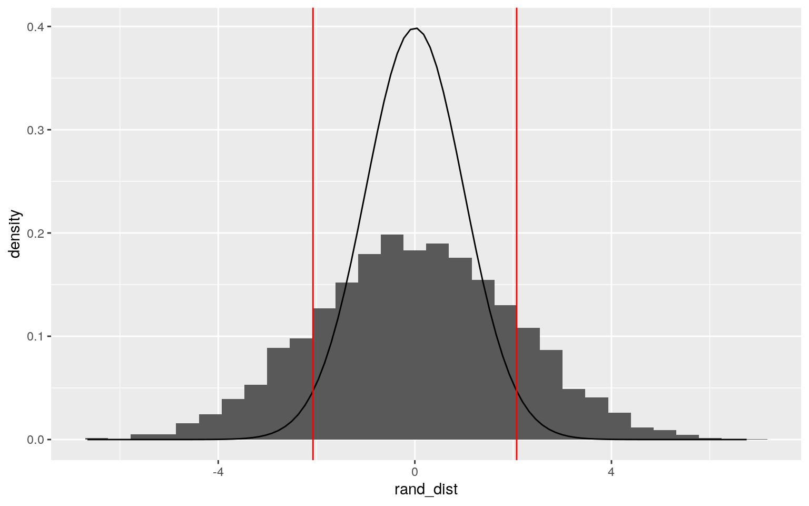

January 1, 0001
Dataset
I am using the Wong dataset from the carData package. This dataset shows the results for a study about IQ recovery after a coma. It measures the duration of the coma, the number of days after the coma that IQ was measured, age, gender, performance IQ (PIQ), and verbal IQ (VIQ). There are 331 observations in this dataset.
library(carData)
glimpse(Wong)## Rows: 331
## Columns: 7
## $ id <int> 3358, 3535, 3547, 3592, 3728, 3790, 3807,
3808, 4253, 4356, 4384, 4542, 4705, 47…
## $ days <dbl> 30, 16, 40, 13, 19, 13, 37, 31, 40, 31, 35,
22, 18, 15, 36, 46, 33, 26, 35, 33, …
## $ duration <int> 4, 17, 1, 10, 6, 3, 5, 7, 3, 7, 8, 11,
1, 25, 0, 4, 5, 1, 5, 1, 4, 8, 1, 3, 7, 7…
## $ sex <fct> Male, Male, Male, Male, Male, Male, Male,
Male, Male, Male, Male, Female, Female…
## $ age <dbl> 20.67077, 55.28816, 55.91513, 61.66461,
30.12731, 57.06229, 24.67625, 28.26831, …
## $ piq <int> 87, 95, 95, 59, 67, 76, 74, 91, 115, 86, 76,
71, 127, 82, 88, 69, 102, 77, 82, 1…
## $ viq <int> 89, 77, 116, 73, 73, 69, 77, 110, 110, 83,
90, 89, 109, 85, 97, 88, 117, 89, 95,…MANOVA Testing
library(rstatix)
group <- Wong$sex
DVs <- Wong %>% select(duration, piq, viq, days)
# I excluded the id variable because it doesn't make sense to include it.
#Test multivariate normality for each group (null: assumption met)
sapply(split(DVs,group), mshapiro_test)## Female Male
## statistic 0.8359404 0.4829275
## p.value 2.122462e-07 7.353758e-27man1<-manova(cbind(duration, piq, viq, days)~sex, data=Wong)
summary(man1)## Df Pillai approx F num Df den Df Pr(>F)
## sex 1 0.020065 1.6688 4 326 0.1569
## Residuals 329#probability of type 1 error
1-.95^1## [1] 0.05The data did not meet MANOVA assumptions. After testing for multivariate normality, the p values were both less than .05, therefore, the null hypothesis that there is multivariate normality was rejected. The null hypothesis of the MANOVA is that for each response variable (duration, piq, viq, and days) the means of all groups are equal. The MANOVA test had a p value of .1569. Since the p value of the manova test was greater than .05, we fail to reject the null hypothesis. There was no need to do any univariate ANOVA or post hoc tests because there was not significant evidence of a mean difference across groups. I performed a total of one test, so the unadjusted probabilty of a type 1 error is .05. There was no need for a bonferroni correction because only one test was performed.
Randomization Test
Null Hypothesis: The sample mean for the difference in PIQ for males and females is not significantly different from the population mean of the difference in PIQ between males and females. Alternative Hypothesis: The sample mean for the difference in PIQ for males and females is significantly different from the population mean of the difference in PIQ between males and females.
ggplot(Wong,aes(piq,fill=sex))+geom_histogram(bins=6.5)+
facet_wrap(~sex,ncol=2)+theme(legend.position="none")t.test(data=Wong,piq~sex)##
## Welch Two Sample t-test
##
## data: piq by sex
## t = 0.89608, df = 95.285, p-value = 0.3725
## alternative hypothesis: true difference in means is not
equal to 0
## 95 percent confidence interval:
## -2.517771 6.660891
## sample estimates:
## mean in group Female mean in group Male
## 89.18310 87.11154rand_dist<-vector()
mean(Wong[Wong$sex == "Male",]$piq)-mean(Wong[Wong$sex == "Female",]$piq)## [1] -2.07156set.seed(348)
for(i in 1:5000){
new<-data.frame(PIQ=sample(Wong$piq),sex=Wong$sex)
rand_dist[i]<-mean(new[new$sex=="Male",]$PIQ)-
mean(new[new$sex=="Female",]$PIQ)}
mean(rand_dist>2.07156 | rand_dist< -2.017156)## [1] 0.3192data.frame(rand_dist) %>%ggplot(aes(rand_dist)) + geom_histogram(aes(y=..density..))+ stat_function(fun=dt,args=list(df=330),geom="line") + geom_vline(xintercept=-2.07156, color="red") +geom_vline(xintercept = 2.07156, color ="red") The t test gave a p value of .3725. Since the p value is greater than .05, we fail to reject the null hypothesis. There is not enough evidence to suggest that the sample mean difference in PIQ between males and females is different from the population's mean difference. The randomization test gives a p value of .3192.
Linear Regression Model
library(lmtest)
library(sandwich)
Wong$piq_c <- Wong$piq - mean(Wong$piq)
Wong$duration_c <- Wong$duration - mean(Wong$duration)
fit <- lm(piq_c~duration_c*sex, data = Wong)
summary(fit)##
## Call:
## lm(formula = piq_c ~ duration_c * sex, data = Wong)
##
## Residuals:
## Min 1Q Median 3Q Max
## -42.409 -10.402 -0.959 9.135 43.041
##
## Coefficients:
## Estimate Std. Error t value Pr(>|t|)
## (Intercept) -1.4527 1.8577 -0.782 0.435
## duration_c -0.6125 0.1325 -4.623 5.44e-06 ***
## sexMale 1.1002 2.0674 0.532 0.595
## duration_c:sexMale 0.5456 0.1363 4.004 7.72e-05 ***
## ---
## Signif. codes: 0 '***' 0.001 '**' 0.01 '*' 0.05 '.' 0.1
' ' 1
##
## Residual standard error: 14.61 on 327 degrees of freedom
## Multiple R-squared: 0.07597, Adjusted R-squared: 0.06749
## F-statistic: 8.961 on 3 and 327 DF, p-value: 1.013e-05ggplot(Wong, aes(duration_c,piq_c, color=sex)) + geom_point() +
geom_smooth(method="lm")shapiro.test(fit$residuals)##
## Shapiro-Wilk normality test
##
## data: fit$residuals
## W = 0.99394, p-value = 0.2094bptest(fit)##
## studentized Breusch-Pagan test
##
## data: fit
## BP = 6.4118, df = 3, p-value = 0.09321coeftest(fit, vcov = vcovHC(fit))##
## t test of coefficients:
##
## Estimate Std. Error t value Pr(>|t|)
## (Intercept) -1.45267 1.91257 -0.7595 0.4480791
## duration_c -0.61249 0.14182 -4.3189 2.082e-05 ***
## sexMale 1.10018 2.10624 0.5223 0.6017872
## duration_c:sexMale 0.54559 0.14459 3.7735 0.0001911 ***
## ---
## Signif. codes: 0 '***' 0.001 '**' 0.01 '*' 0.05 '.' 0.1
' ' 1For a female with average coma duration, PIQ will be 1.4527 points lower than the average PIQ. For a male with average coma duration, PIQ will be 1.1002 points higher than the average PIQ. Controlling for gender, for each day increase in coma duration the PIQ will be .6125 points lower than the average PIQ. The slope for PIQ is .5456 greater for males compared to females. The assumption of linearity has not been met. The points don't appear to have a linear pattern, most of them are crowded near the x axis. The assumption of normality has been met. The shapiro-wilk normality test had a p value of .2094, which is greater than .05. We fail to reject the null hypothesis, so the data is normally distributed. The assumption of homoskedasticity has been met. The Breush-Pagan test has a p value of .09321 which is greater than .05. We fail to reject the null hypothesis, so the data is homoskedastic. After running the regression results with robust standard errors, both the duration and the interaction between duration and sex have p values less than .05. This means that controlling for gender, duration explains variation in PIQ. It also means that the interaction between gender and duration explains variation in PIQ. There were no significant changes that came from running with robust standard error. The model explains 6.749% of the variation in outcome (adjusted R square).
Bootstrapped SE
set.seed(348)
samp_distn<-replicate(5000, {
boot_dat <- sample_frac(Wong, replace=T)
fit1 <- lm(piq_c~duration_c*sex, data=boot_dat)
coef(fit1) })
samp_distn %>% t %>% as.data.frame %>% summarise_all(sd)## (Intercept) duration_c sexMale duration_c:sexMale
## 1 1.828472 0.1256165 2.035287 0.1294586samp_distn %>% t %>% as.data.frame %>% pivot_longer(1:3) %>% group_by(name) %>% summarize(lower=quantile(value,.025), upper=quantile(value,.975))## # A tibble: 3 x 3
## name lower upper
## <chr> <dbl> <dbl>
## 1 (Intercept) -5.11 2.01
## 2 duration_c -0.913 -0.424
## 3 sexMale -2.76 5.10Compared to the regression results with robust standard error, the standard error of the bootstrapped SE for all variables has decreased. Since the SE has decreased, the p value has also decreased.
Logistic Regression Model
library(plotROC)
fit2 <- glm(sex~piq+duration, data = Wong, family = "binomial")
summary(fit2)##
## Call:
## glm(formula = sex ~ piq + duration, family = "binomial",
data = Wong)
##
## Deviance Residuals:
## Min 1Q Median 3Q Max
## -2.1871 0.4707 0.6849 0.7358 0.8243
##
## Coefficients:
## Estimate Std. Error z value Pr(>|z|)
## (Intercept) 1.581041 0.836058 1.891 0.0586 .
## piq -0.005323 0.009031 -0.589 0.5556
## duration 0.015910 0.009529 1.670 0.0950 .
## ---
## Signif. codes: 0 '***' 0.001 '**' 0.01 '*' 0.05 '.' 0.1
' ' 1
##
## (Dispersion parameter for binomial family taken to be 1)
##
## Null deviance: 344.15 on 330 degrees of freedom
## Residual deviance: 338.98 on 328 degrees of freedom
## AIC: 344.98
##
## Number of Fisher Scoring iterations: 5exp(coef(fit2))## (Intercept) piq duration
## 4.8600106 0.9946916 1.0160373prob <- predict(fit2, type = "response")
truth <- Wong$sex
table(prediction=as.numeric(prob>.5), truth)%>%addmargins## truth
## prediction Female Male Sum
## 1 71 260 331
## Sum 71 260 331(71+260)/331 #accuracy## [1] 1260/260 #sensitivity## [1] 171/71 #specificity## [1] 1class_diag<-function(probs,truth){
tab<-table(factor(probs>.5,levels=c("FALSE","TRUE")),truth)
acc=sum(diag(tab))/sum(tab)
sens=tab[2,2]/colSums(tab)[2]
spec=tab[1,1]/colSums(tab)[1]
ppv=tab[2,2]/rowSums(tab)[2]
f1=2*(sens*ppv)/(sens+ppv)
if(is.numeric(truth)==FALSE & is.logical(truth)==FALSE){
truth<-as.numeric(truth)-1}
#CALCULATE EXACT AUC
ord<-order(probs, decreasing=TRUE)
probs <- probs[ord]; truth <- truth[ord]
TPR=cumsum(truth)/max(1,sum(truth))
FPR=cumsum(!truth)/max(1,sum(!truth))
dup<-c(probs[-1]>=probs[-length(probs)], FALSE)
TPR<-c(0,TPR[!dup],1); FPR<-c(0,FPR[!dup],1)
n <- length(TPR)
auc<- sum( ((TPR[-1]+TPR[-n])/2) * (FPR[-1]-FPR[-n]) )
data.frame(acc,sens,spec,ppv,f1,auc)
}
class_diag(prob,truth)## acc sens spec ppv f1 auc
## Male 0.7854985 1 0 0.7854985 0.8798646 0.5903846roc <- ggplot(Wong)+geom_roc(aes(d=sex, m=piq+duration))
rocWong$logit<-predict(fit2,type="link")
Wong%>%ggplot()+geom_density(aes(logit,color=sex,fill=sex), alpha=.4)+
theme(legend.position=c(.85,.85))+geom_vline(xintercept=0)+xlab("predictor (logit)") Controlling for piq, for every 1 day increase in coma duration odds of being a female increase by a factor of 1.0160373. Controlling for coma duration, for every 1 point increase in PIQ, odds of being female decrease by a factor of .9946916.
Controlling for piq, for every 1 day increase in coma duration odds of being a female increase by a factor of 1.0160373. Controlling for coma duration, for every 1 point increase in PIQ, odds of being female decrease by a factor of .9946916.
The accuracy, specificity, and senstivity of the model are all equal to 1 because the predictions based on fit2 are the same as the population.
The ppv is .7854985 and the auc is .5903846. The AUC is between .5 and .6 so the model is bad at predicting new data. The ROC plot looks somewhat linear, so it is not good because there is not a lot of area under the curve.
Logistic Regression Model Part 2
Wong <- Wong %>% select(-id)
fit3 <- glm(sex~., data=Wong, family = "binomial")
prob1 <- predict(fit3, type = "response")
class_diag(prob1, Wong$sex)## acc sens spec ppv f1 auc
## Male 0.7854985 1 0 0.7854985 0.8798646 0.5959913truth <- Wong$sex
table(prediction=as.numeric(prob>.5), truth)## truth
## prediction Female Male
## 1 71 260set.seed(348)
k=10
data <- Wong %>% sample_frac
folds <- ntile(1:nrow(data),n=10)
diags<-NULL
for(i in 1:k){
train <- data[folds!=i,]
test <- data[folds==i,]
truth <- test$sex
fit <- glm(sex~., data=train, family="binomial")
probs <- predict(fit, newdata=test, type="response")
diags<-rbind(diags,class_diag(probs,truth))
}
summarize_all(diags,mean)## acc sens spec ppv f1 auc
## 1 0.7854724 1 0 0.7854724 0.8788653 0.5411298library(glmnet)
set.seed(348)
y<-as.matrix(Wong$sex)
preds<-model.matrix(sex~.,data=Wong)[,-1]
cv<-cv.glmnet(preds,y,family="binomial")
lasso_fit<-glmnet(preds,y,family="binomial",lambda=cv$lambda.1se)
coef(lasso_fit)## 9 x 1 sparse Matrix of class "dgCMatrix"
## s0
## (Intercept) 1.298002e+00
## days .
## duration .
## age .
## piq .
## viq .
## piq_c .
## duration_c .
## logit 2.842290e-16Accuracy, sensitivity, and specificity are all equal to 1 again. The predictions made from fit3 match the population. The AUC is .5959913, which is slightly higher than it was looking at only piq and duration, but it is still bad. The ppv is .7854985, so it has not changed.
10 fold cv gave a lower auc and ppv. The ppv was .7854724 and the auc was .5411298, which is wrose than the other auc. Acc, sens, and spec are still the same.
None of the variables were retained when LASSO was performed. This means that none of the variables in this data set are useful for predicting the gender of the patient.